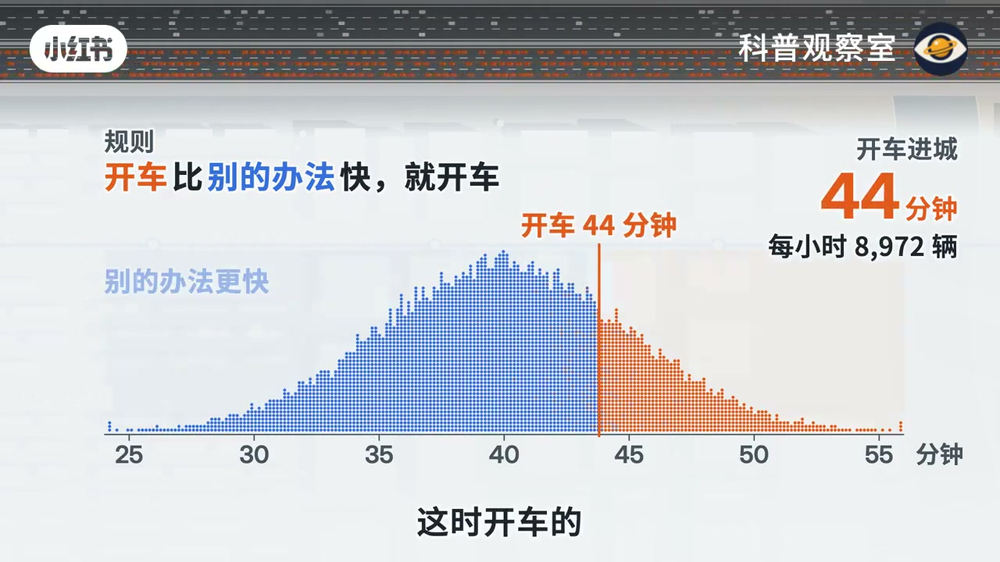
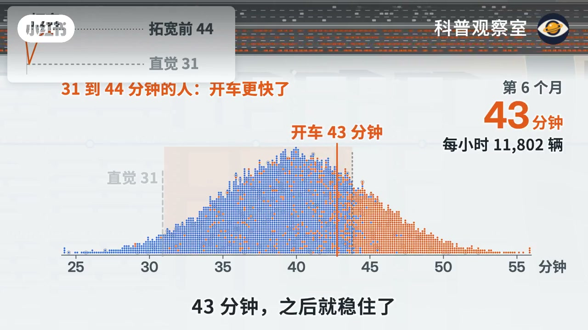
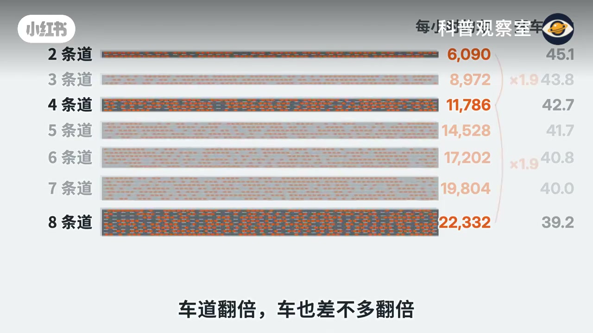
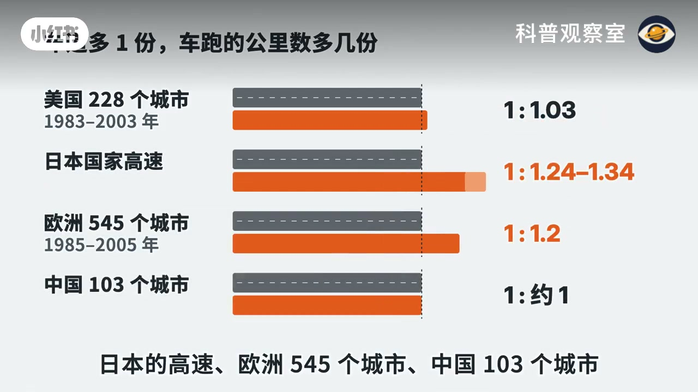
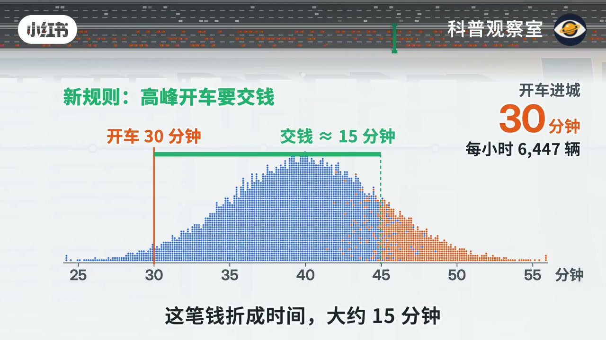

内容要点
这是一条四分钟的城市交通讲解。口播把一座城的早高峰收成一条规则，画面用点阵、时间分布和四国对照把同一条规则跑完。下面按论证顺序归纳，不是逐句转录。
知识结构
城外四万人每天比较开车和别的办法。别的办法包括地铁、早出门、绕路，以及这趟干脆不跑，全部折成分钟。空路只要 25 分钟，几乎人人想开；人一多就慢，慢到 44 分钟停住，画面标每小时 8972 辆。
若车上的人还是这么多，四条道可以把 44 分钟算成 31 分钟，每天快 13 分钟。口播把这称为“直觉里的那座城”，因为模型里的人不会停在旧选择上。
每个月有二十分之一的人重新比一次。第一个月真是 31 分钟，画面约每小时 9005 辆；第三个月口播说到 41 分钟，第六个月回到 43 分钟。稳住后只比拓宽前快约 1 分钟，车却从约 9000 辆增到约 11800 辆。两条加到八条也一样：车道翻倍，车差不多翻倍，开车只快两三分钟。
口播说两位经济学家查了美国 228 个城市二十年的数据：快速路车道多 10%，车跑的公里数多 10.3%。用一百多年前的铁路和探险路线挑出碰巧路多的城市，仍是约一比一。日本高速、欧洲 545 个城市、中国 103 个城市也在一比一上下，有的更高。从别的路挪过来的最多约一成；卡车和跑生意、本地人多开、搬来的人占了其余大头。
模型回到三条道，高峰开车要交钱，价钱调到开车正好 30 分钟。这笔钱折成大约 15 分钟，开车的总代价仍在 45 分钟上下，只是其中 15 分钟从堵在路上换成交钱。拓宽后再收费，开车还是 30 分钟，价钱低一点，路上的车多过三分之一。片尾判断：路没白修，每天早上多运了约三分之一的人和货；做不到的是让车变快。
只要门口还有人在等，路再快一点就会有人改开车。拓宽把排队换成更多车流，速度会回到和原来差不多的地方；视频认为，想把速度定住，剩下的主要办法是拥堵收费。
四万人，一条规则
00:00–00:58
开场就是那条上班路。前两年从三条道拓成四条，刚通车那阵真快，没过多久又堵回老样子。问题被说得很窄：路宽了三分之一，车怎么又塞满了。
接着画面离开实拍，换成一座格子城。城外住着四万个早上要进城的人，一个点是十个人。每个人比较两件事：开车走这条快速路，还是用别的办法。别的办法不只是坐地铁，早点出门、绕另一条路、这趟干脆不跑，都算，而且都折成分钟。有人的替代方案是 30 分钟，有人是 50 分钟。规则只有一条。
开车更快就开车。
路上没车的时候，开车只要 25 分钟，几乎人人都想开。开的人一多，路就慢，慢到 44 分钟停住。这时还在开车的，是别的办法要 44 分钟以上的人。画面右侧把这个均衡写成大字：开车进城 44 分钟，每小时 8972 辆。口播说的是“每小时九千辆”，和画面的 8972 是同一档，不是另一个数。

直觉会快 13 分钟，模型里的人会改主意
00:58–02:10
现在把路拓成四条道。口播先问：要是车还这么多，好算，44 分钟变 31 分钟，天天快 13 分钟。这句话被单独标成“直觉里的那座城”。下一句立刻拆掉它：模型里的人会改主意，每个月有二十分之一的人重新比一次。
拓宽第一个月真快了，31 分钟。画面在这一拍标的是 31 分钟、每小时 9005 辆，和口播一致。可 31 分钟比很多人的别的办法都快，坐地铁的、早早出门的、原来不跑的，开始改开车。口播接着报第三个月 41 分钟、第六个月 43 分钟，之后稳住，只比拓宽前快一分钟。路上的车从每小时九千辆变成一万一千八。车道多了三分之一，车也多了差不多三分之一。
这里有一处口播和单帧不完全重合，需要按时间读，不能合成一个数。约 1 分 32 秒，字幕仍在说“第三个月，41 分钟”，分布图上的大字已经是 42 分钟、每小时 11676 辆。到第六个月，口播和画面一起停在 43 分钟，画面标每小时 11802 辆。再往后，对比条写成开车 43.8 到 42.7 分钟、只快 1 分钟，车从 8972 到 11786 辆；第 23 个月的一帧写着 42.7 分钟、每小时 11796 辆。口播用“一万一千八”收束，和这些四位数是同一结果。

为什么偏偏停在差不多的地方？画面把“快出来的这一分钟”单独圈出来，里面站着 2814 人，字幕说“两千八百个人”。只要门口还有人在等，路再快一点我就开，快出来的时间就会被新来的车吃掉。
车道从两条加到八条，每次都一样。画面把七档并排：2 条 6090 辆、右侧 45.1；3 条 8972、43.8；4 条 11786、42.7；5 条 14528、41.7；6 条 17202、40.8；7 条 19804、40.0；8 条 22332、39.2。两条到四条、四条到八条都标了约 1.9 倍。右侧那一列视频没有写单位。它随车道变多而下降，幅度是两三分钟，和口播“开车只快两三分钟”对得上，这里按通勤分钟来读，不把它当成时速。

这不只是模型里的事
02:10–03:10
口播说两位经济学家查了美国 228 个城市、二十年的数据：城市快速路的车道多 10%，车跑的公里数就多 10.3%。会不会是车多的城市才修路？他们拿一百多年前的铁路和探险路线，挑出碰巧路多的城市来比，还是一比一。日本的高速、欧洲 545 个城市、中国 103 个城市，各自算出来也都在一比一上下，有的还更高。口播没有念出人名。片尾“参考文献”画面列出四篇，依次是 Duranton 与 Turner 2011 年《美国经济评论》上的美国城市研究、Hsu 与 Zhang 2014 年关于日本高速的文章、Garcia-Lopez 等人 2022 年关于欧洲公路的文章，以及 Chen 与 Klaiber 2020 年关于中国道路扩建是否诱增交通的文章。人名和期刊是画面上的文献，不是口播原句。

更出乎意料的是多出来的车从哪来。直觉说是新路把别的路上的车分过来。可美国那笔账里，从别的路挪过来的最多一成；卡车和跑生意的车占两到三成；本地人多开的占一到四成；搬来的人占半成到两成。新路上的车大多是新跑出来的：原来不跑的那一趟，原来不载这座城的人和货。画面把这四类画成区间条，标题是“快速路多 10%，多出来的车从哪来”，并注明是美国、占多出来的车公里的比例。区间的两端以口播的“成”为准，不把看图时的模糊刻度写成另一套精确百分比。
什么能让车快起来
03:10–04:10
回到模型，还是三条道，加一条规则：高峰开车要交钱。价钱调到开车正好 30 分钟。口播里的“价钱条到”按语境收成“调到”。这笔钱折成时间大约 15 分钟，开车的代价还是 45 分钟上下，只是其中 15 分钟从堵在路上换成了交钱。画面把这句话画成一条绿括号：开车 30 分钟，交钱约等于 15 分钟，右侧是每小时 6447 辆。和拓宽前不收费的 8972 辆比，收费把车流压下去了，速度则被价钱定在 30 分钟，不再靠排队把自己慢到 44 分钟。

下一段是拓宽以后再收费。口播说开车还是 30 分钟，价钱低一点，路上多过三分之一的车，车速由价钱定住。约 3 分 44 秒的一帧把交钱标成约 14 分钟、每小时 8597 辆。8597 相对前面的 6447 大约多三分之一，和“多过三分之一的车”同向，但 14 分钟和口播的“大约 15 分钟”差 1 分钟，正文两边都保留。
那两位经济学家的结论，口播转述为：剩下的主要办法是拥堵收费。视频没有在这里比较公交加密、错峰或限行，所以这句是他们在这条论证里的结论，不是一份政策菜单。
回到那条快速路。口播把“它没白修”说了两遍：每天早上多运了三分之一的人和货。它做不到的是让车变快。只要门口还有人在等，快出来的那几分钟很快就会被新的车坐满。片长 4 分 10 秒，参考文献停在最后十几秒，没有再给一个新的数字。
转录保留 Whisper 原文，其中“拓”常被听成“拖”，“调”被听成“条”。正文按画面上的“拓宽”和收费语境写。第 3 个月的 41 与 42、收费折算的 15 与 14，已在对应段落写明。